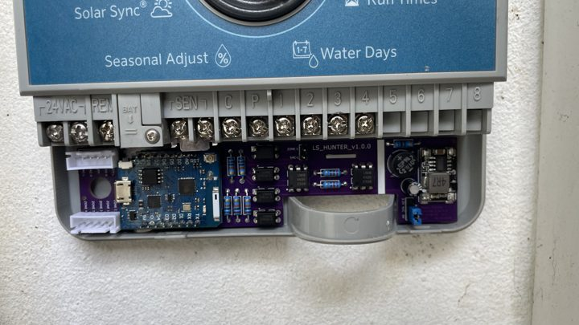

1Qual é a sua placa?Which board do you have?
A versão está impressa na placa.
The version is printed on the board.
2Instalar o firmwareInstall the firmware
- Ligue o módulo ESP a este computador com um cabo USB de dados. Faça isto antes de montar a placa no X-Core.
- Carregue em Instalar, escolha a porta (USB JTAG/serial na v2.0.0, CH340/CP210x na v1.x) e depois Install.
- Connect the ESP module to this computer with a USB data cable. Do this before fitting the board in the X-Core.
- Press Install, pick the port (USB JTAG/serial on v2.0.0, CH340/CP210x on v1.x), then Install.
✅ Deve ver: uma barra de progresso (cerca de 1 minuto) e depois a janela do Wi-Fi.You should see: a progress bar (about 1 minute), then the Wi-Fi window.
3Wi-Fi
- Na mesma janela escolha a sua rede, escreva a palavra-passe e carregue em Connect. Tem de ser uma rede de 2,4 GHz.
- Saltou este passo? No telemóvel ligue-se à rede
Hunter-LS Setup: abre-se uma página para escolher o Wi-Fi. Volta a aparecer sempre que a placa perde o Wi-Fi. - v2.0.0: também pode configurar o Wi-Fi por Bluetooth na app do Home Assistant.
- In the same window pick your network, type the password and press Connect. It must be a 2.4 GHz network.
- Skipped it? From your phone join the
Hunter-LS Setuphotspot: a page opens to pick your Wi-Fi. It comes back whenever the board loses Wi-Fi. - v2.0.0: you can also set Wi-Fi over Bluetooth from the Home Assistant app.
4Montar no X-CoreFit it in the X-Core
⚠️ Desligue primeiro o transformador do X-Core da tomada. A placa só liga ao lado de 24 V AC.Unplug the X-Core transformer first. The board only touches the 24 V AC side.
- Ponha o interruptor do sensor do X-Core em “Active” (necessário para a Pause Watering).
- Ligue os fios aos terminais do X-Core seguindo as legendas da placa (zonas, VAC, REM, SEN).
- Volte a ligar o transformador. O LED pisca até ligar ao Wi-Fi.
- Set the X-Core sensor bypass switch to “Active” (needed for Pause Watering).
- Connect the wires to the X-Core terminals following the labels on the board (zones, VAC, REM, SEN).
- Plug the transformer back in. The LED blinks until it is on Wi-Fi.

Foto: Luís Soares (placa v1.0.0, as outras montam-se igual).Photo: Luís Soares (v1.0.0 board, the others fit the same way). Mais fotosMore photos
5Home Assistant
Definições → Dispositivos e serviços: aparece Hunter Irrigation → Configurar. Teste: Run Time = 1 e ligue a Zone 1.
Settings → Devices & services: Hunter Irrigation shows up → Configure. Test: Run Time = 1 and turn on Zone 1.
| Zone 1 … Zone N | Liga/desliga a zona e mostra o estado real da válvula.Runs the zone and shows the real valve state. |
| Watering · Active Zone | Se está a regar, e qual a zona.Is anything watering, and which zone. |
| Run Time | Minutos de rega (1–240).Watering minutes (1–240). |
| Run Program A/B/C · Stop All | Iguais aos botões do programador.Same as the controller's buttons. |
| Pause Watering | Bloqueia toda a rega, como um sensor de chuva.Blocks all watering, like a rain sensor. |
| Firmware Update | Novas versões com um clique.New versions in one click. |
?ProblemasTroubleshooting
Não aparece nenhuma portaNo port shows up
Use um cabo USB de dados (muitos só carregam). v1.x: instale o driver CH340 ou CP210x do seu D1 mini.
Use a USB data cable (many only charge). v1.x: install the CH340 or CP210x driver for your D1 mini.
“Failed to connect” (v2.0.0)
Mantenha carregado o botão BOOT do XIAO enquanto liga o cabo, solte e tente de novo.
Hold the XIAO BOOT button while plugging in the cable, release, and try again.
O Home Assistant não encontra a placaHome Assistant doesn't find the board
Tem de estar na mesma rede. Adicione à mão: integração ESPHome → hunter-ls-xxxxxx.local ou o IP.
It must be on the same network. Add it by hand: ESPHome integration → hunter-ls-xxxxxx.local or its IP.
A zona liga e desliga-se sozinhaA zone turns itself back off
O X-Core não abriu a válvula: verifique o fio REM, que o X-Core não está em “Off” e que Pause Watering está desligado.
The X-Core did not open the valve: check the REM wire, that the X-Core is not on “Off” and that Pause Watering is off.
Pause Watering não faz nadaPause Watering does nothing
O interruptor do sensor do X-Core tem de estar em Active.
The X-Core sensor switch must be on Active.
Todos os problemasAll troubleshooting · Guia completoFull guide · Pedir ajudaAsk for help